E01 · ENEMY
기본 블록봇
산호빛 정육면체와 짧은 남색 발
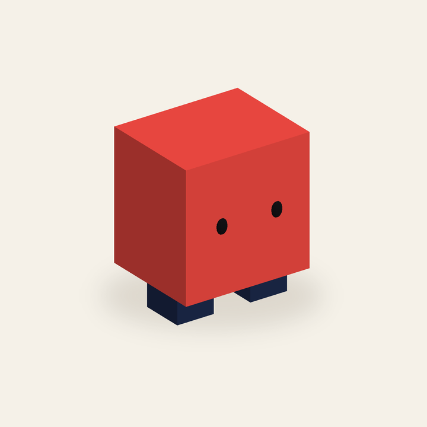
기본 접근형
천천히 다가와 길을 압박하는 가장 단순한 기본 적 콘셉트.
정면 · 측면 · 뒷면 · 탑뷰
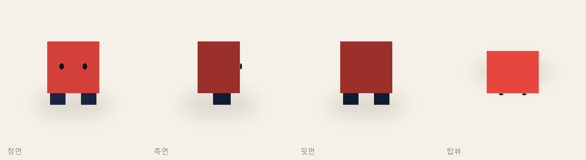
8개 부품 · 408 삼각형 · 1.35 × 1.65 × 1.15 studs
낮은 바퀴형부터 3단 분열형까지.
같은 블록 스타일, 서로 다른 실루엣.
산호빛 정육면체와 짧은 남색 발

기본 접근형
천천히 다가와 길을 압박하는 가장 단순한 기본 적 콘셉트.

8개 부품 · 408 삼각형 · 1.35 × 1.65 × 1.15 studs
낮은 노랑 몸체와 네모 바퀴
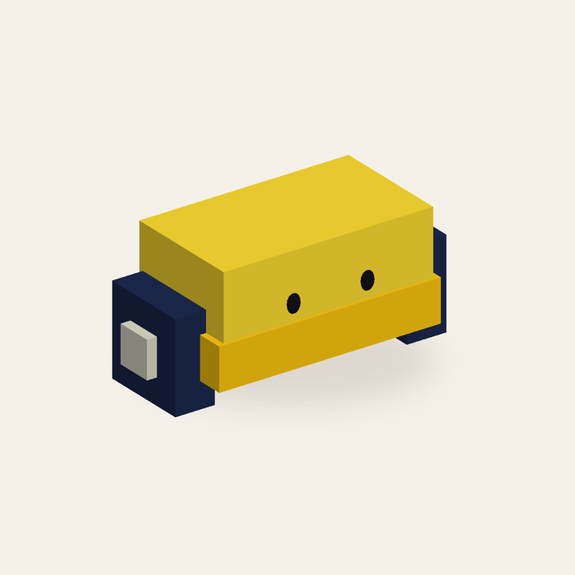
고속 이동형
낮은 차체로 빠르게 접근해 빈틈을 파고드는 이동 적 콘셉트.
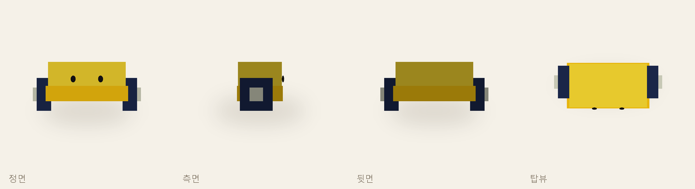
8개 부품 · 408 삼각형 · 2.36 × 1.07 × 1.03 studs
넓은 초록 벽돌 3단과 굵은 발
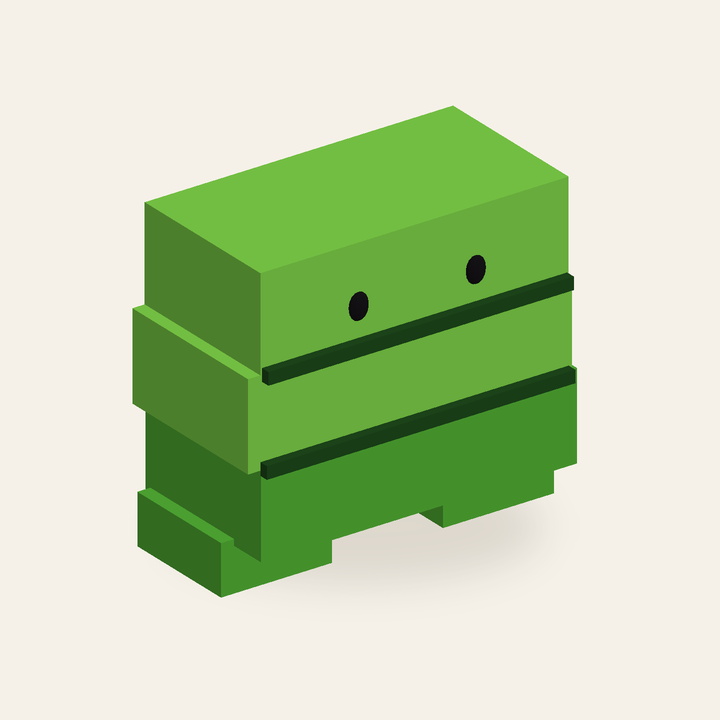
고내구 길막형
넓은 몸으로 이동 경로를 막고 오래 버티는 중장 적 콘셉트.
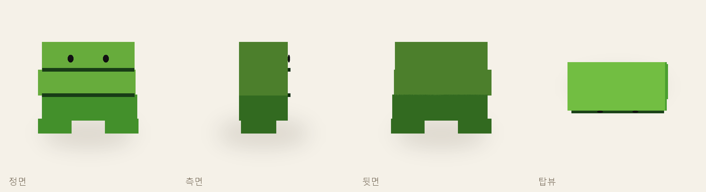
9개 부품 · 420 삼각형 · 2.16 × 1.98 × 1.11 studs
세 장갑판과 좁은 눈 틈
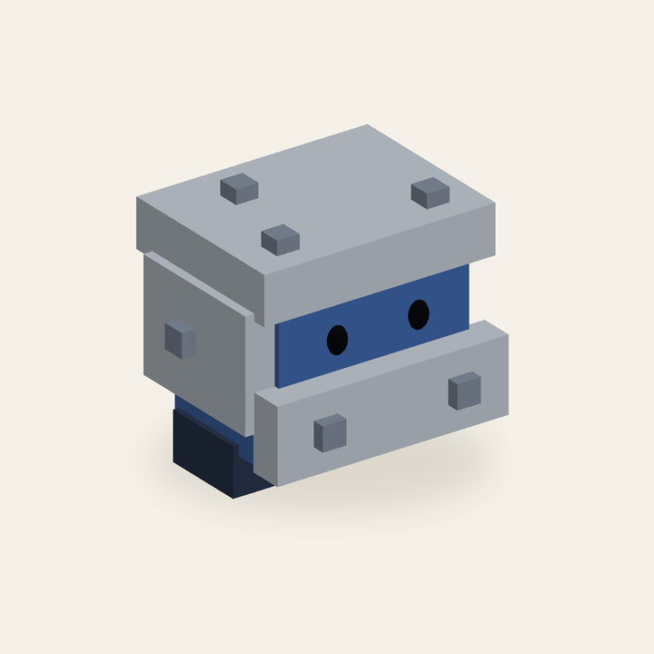
전방 방어형
장갑으로 길목을 막는 방어형 적 콘셉트.
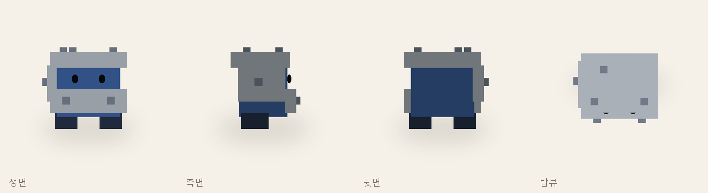
14개 부품 · 480 삼각형 · 1.81 × 1.76 × 1.5 studs
살짝 어긋난 세 얼굴 큐브
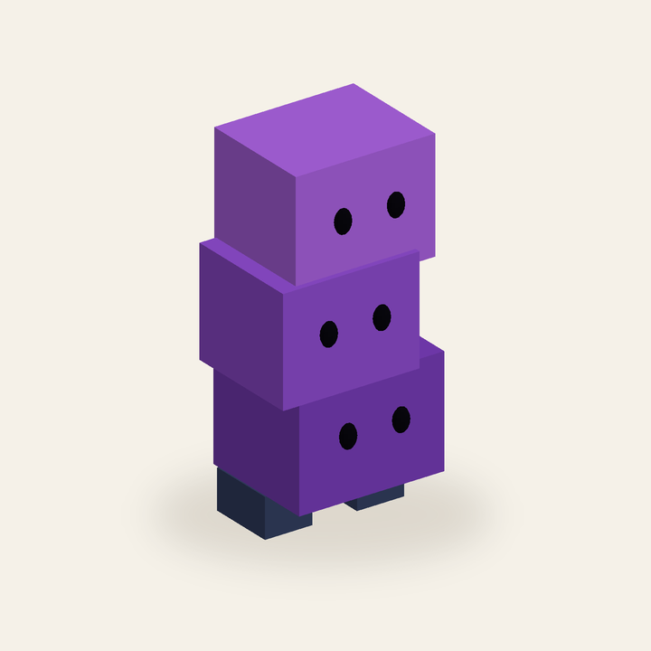
분열 압박형
세 몸이 층별로 갈라질 수 있는 분열형 적 콘셉트.
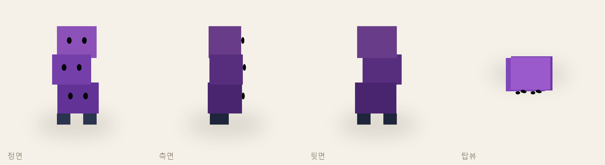
11개 부품 · 1,068 삼각형 · 1.17 × 2.48 × 0.96 studs
사각 U자 렌치와 부품 주머니
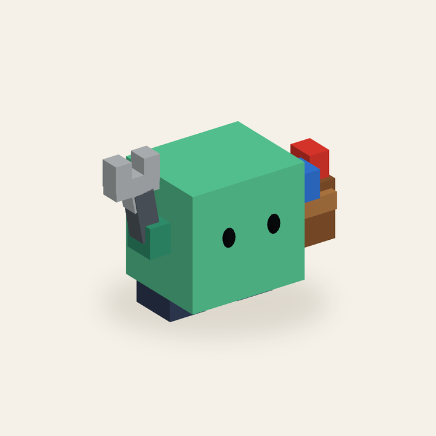
지원 수리형
주변 적을 보조하고 고치는 지원형 적 콘셉트.
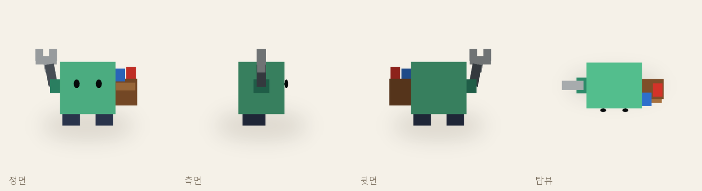
15개 부품 · 492 삼각형 · 2.21 × 1.67 × 1.08 studs
비치는 몸통 · 짙은 파랑 테두리 · 짧은 네 발
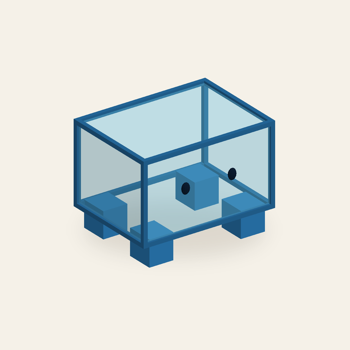
은신 접근형
투명한 몸통으로 탐지를 피하는 적 콘셉트. 은신 판정은 미구현.
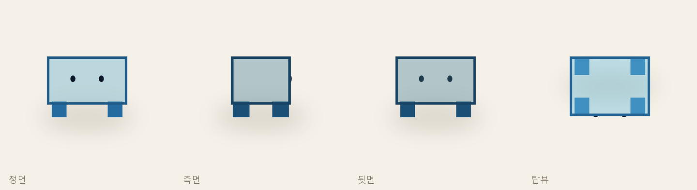
19개 부품 · 540 삼각형 · 1.75 × 1.33 × 1.33 studs
졸린 눈의 황토색 수레와 안에 탄 산호빛 꼬마 블록봇 셋
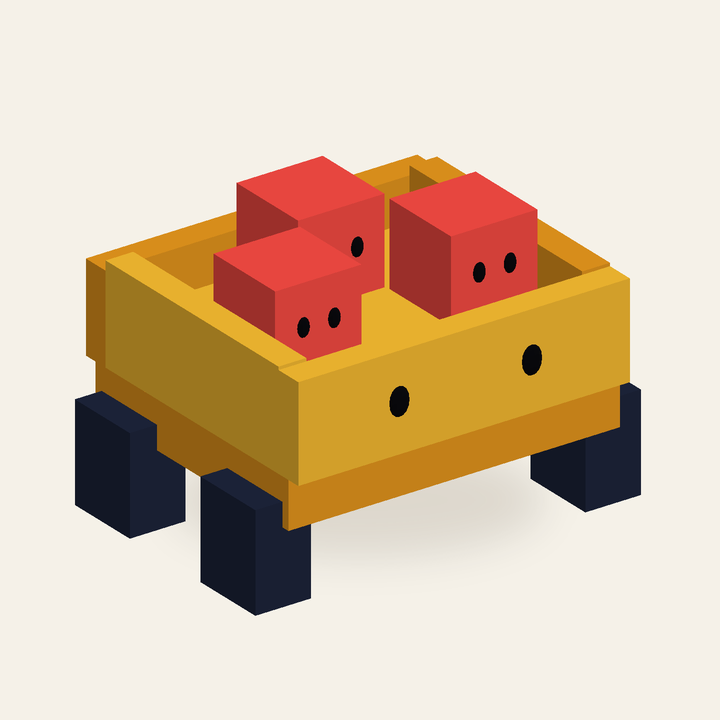
적 수송형
꼬마 블록봇 셋을 전장 안쪽으로 운반하는 느긋한 수송 적 콘셉트.
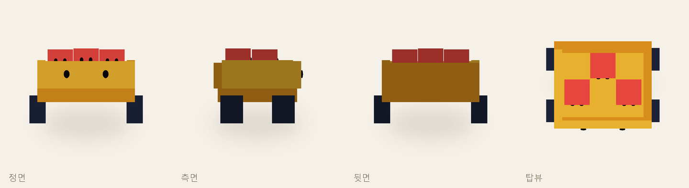
21개 부품 · 1,500 삼각형 · 2.5 × 1.66 × 1.97 studs
청록색 네모 공룡 몸과 산호빛 넓은 주둥이·등 블록
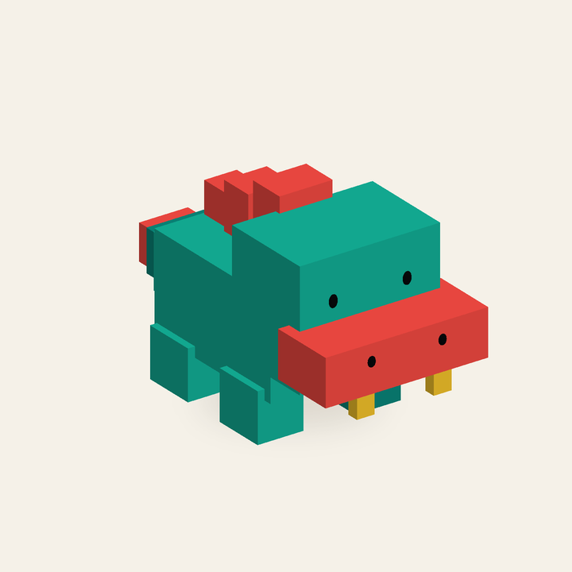
대형 돌진형
큰 몸과 짧고 굵은 다리로 전방을 묵직하게 밀어붙이는 대형 적 콘셉트.
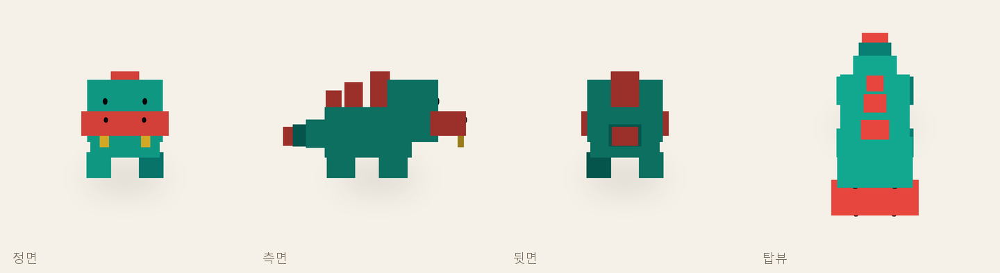
19개 부품 · 852 삼각형 · 2.2 × 2.7 × 4.64 studs
각 모델은 이름이 붙은 개별 Part와 역할별 그룹으로 구성돼 있어요. 전체 배치 파일과 개별 RBXMX, GLB, glTF, OBJ/MTL을 함께 제공합니다. E07 몸통은 실제 투명 재질입니다.
현재는 정적인 3D 모델입니다. 이동·공격·분열·수리·은신·소환 로직은 포함하지 않았습니다. Roblox Studio 직접 로드와 브라우저 WebGL 실행은 이 환경에서 확인하지 못했습니다. 그림은 모델 좌표를 직접 렌더링한 결과입니다.
파일 구성과 검증 범위 · 구조 검사 결과